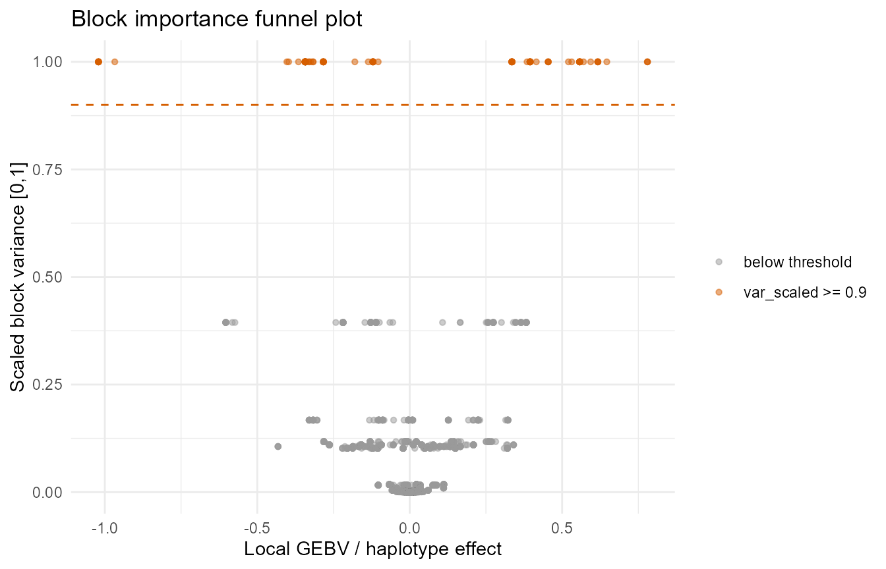
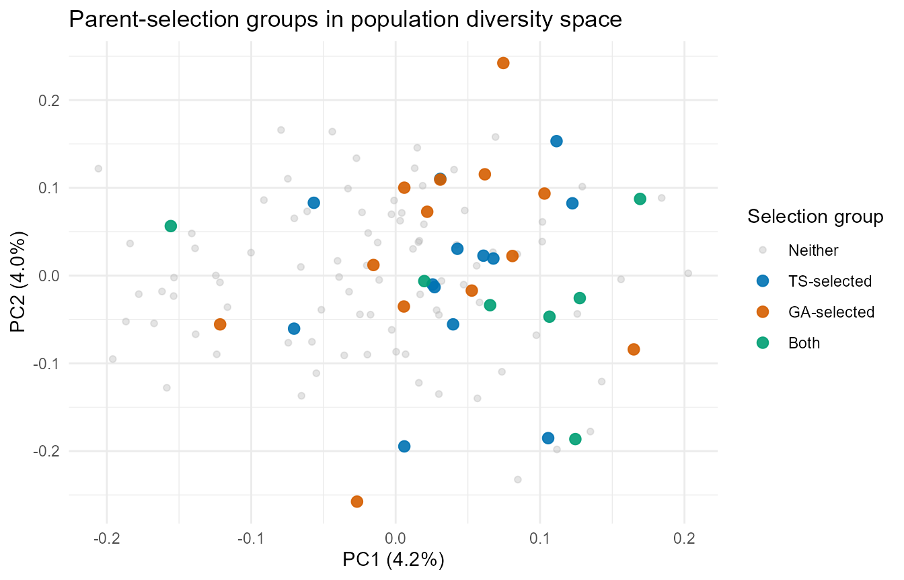

From Local GEBV to a Crossing Decision: Haplotype-Based Parent Selection
Source:vignettes/HapBlockR-breeding-decisions.Rmd
HapBlockR-breeding-decisions.Rmd1. The question this vignette answers
The other vignettes in this package are mostly about finding structure in marker data: detecting linkage disequilibrium (LD) blocks, extracting haplotypes, measuring diversity. This one is about using that structure to make a breeding decision.
The starting point is a genotype-level estimate from a field-trial or
genetic evaluation fitted outside HapBlockR. The package accepts
adjusted means, Best Linear Unbiased Estimates (BLUEs), supported Best
Linear Unbiased Predictions (BLUPs), breeding values, general combining
ability and total genetic value through
prepare_breeding_targets(). It rejects externally computed
genomic predictions and selection-index values because it estimates
marker, haplotype and block effects, and constructs the final index,
internally. It then connects “here is a ranked list of candidates” to
“here is the crossing block for next season,” specifically:
- Where in the genome is that breeding value actually coming from (local GEBV, Genomic Estimated Breeding Value, per haplotype block, not just one genome-wide number)?
- Which set of parents, taken together, covers the most favourable haplotype blocks — and how is that different from simply taking the top N individuals by whole-genome value?
- Is that set balanced across your programme’s families, or does one family dominate the crossing block?
- Does it actually pay off — if you found a recurrent-selection programme on this set instead of the naive top-N list, is realised genetic gain over generations actually higher?
- Which specific crosses, contribution levels, and matings turn that parent set into an actual crossing block — with population-wide inbreeding under an explicit cap, not just a diversity check run afterwards?
Each section below answers one of these questions, in order, ending with an actual list of parents (Sections 3-7) and then, building on that shortlist, a full cross-and-mating decision with its own diversity and validation checks (Sections 8-12) — the evidence for why each choice was made over the obvious alternative, at every step.
2. Illustrative scenario
This vignette reuses the same example data as the introductory
vignette – ldx_geno (120 individuals x 230 SNPs across 3
chromosomes), the pre-detected ldx_blocks (9 LD blocks plus
inter-block singleton SNPs), and ldx_blues (pre-adjusted
BLUEs for two simulated traits, YLD and RES).
See the Introduction vignette for how the blocks themselves
were detected; this vignette starts one step later, from a genotyped,
block-mapped panel with externally analysed BLUEs ready for internal
genomic modelling.
To illustrate the family-balance check in Section 6, this vignette
also adds a synthetic Family grouping — 12 illustrative
families of 10 lines each. This grouping is invented purely for
this example. Your own programme would use its actual
pedigree/family records here instead.
set.seed(1)
family_id <- sample(rep(paste0("Fam", sprintf("%02d", 1:12)), each = 10))
names(family_id) <- rownames(ldx_geno)
table(family_id)
#> family_id
#> Fam01 Fam02 Fam03 Fam04 Fam05 Fam06 Fam07 Fam08 Fam09 Fam10 Fam11 Fam12
#> 10 10 10 10 10 10 10 10 10 10 10 10YLD is a simulated BLUE. The example assigns equal
precision because the bundled teaching data do not contain standard
errors:
target_data <- data.frame(
id = ldx_blues$id,
trait = "YLD",
value = ldx_blues$YLD,
precision = 1
)
targets <- prepare_breeding_targets(
target_data,
input_type = "BLUE",
precision_col = "precision"
)
head(targets$targets)
#> id trait environment unit value record_key reliability PEV
#> 1 ind001 YLD <NA> <NA> -0.5175 ind001::YLD::ACROSS NA NA
#> 2 ind002 YLD <NA> <NA> 0.7635 ind002::YLD::ACROSS NA NA
#> 3 ind003 YLD <NA> <NA> -1.3093 ind003::YLD::ACROSS NA NA
#> 4 ind004 YLD <NA> <NA> -1.1162 ind004::YLD::ACROSS NA NA
#> 5 ind005 YLD <NA> <NA> 1.1343 ind005::YLD::ACROSS NA NA
#> 6 ind006 YLD <NA> <NA> 0.9307 ind006::YLD::ACROSS NA NA
#> precision_raw deregressed_value precision_weight direction model_value
#> 1 1 -0.5175 1 1 -0.5175
#> 2 1 0.7635 1 1 0.7635
#> 3 1 -1.3093 1 1 -1.3093
#> 4 1 -1.1162 1 1 -1.1162
#> 5 1 1.1343 1 1 1.1343
#> 6 1 0.9307 1 1 0.9307
#> input_type estimand estimation_basis
#> 1 BLUE model-adjusted entry mean fixed
#> 2 BLUE model-adjusted entry mean fixed
#> 3 BLUE model-adjusted entry mean fixed
#> 4 BLUE model-adjusted entry mean fixed
#> 5 BLUE model-adjusted entry mean fixed
#> 6 BLUE model-adjusted entry mean fixed3. Step 1: Where is the value coming from?
A single genome-wide breeding value tells you how good a
candidate is, not where that value comes from.
run_haplotype_prediction() re-expresses the same predicted
value as a sum of per-block contributions — local GEBV — so you can see
which specific haplotype blocks are actually driving performance,
following the haplotype-stacking methodology of Tong et al. (2025,
Theor Appl Genet 138:267). This is the first step toward a
genomics-informed crossing decision rather than a black-box ranking.
pred <- run_haplotype_prediction(
geno_matrix = ldx_geno,
snp_info = ldx_snp_info,
blocks = ldx_blocks,
blues = targets,
marker_effect_method = "gblup",
complete_decomposition = TRUE,
verbose = FALSE
)
pred$n_blocks # includes singleton pseudo-blocks
#> [1] 39
sum(pred$block_importance$important) # blocks clearing the 0.9 cutoff
#> [1] 1
head(pred$block_importance[
order(-pred$block_importance$var_scaled),
c("block_id", "CHR", "n_snps", "var_scaled", "important")
])
#> block_id CHR n_snps var_scaled important
#> 4 block_2_1000_30023 2 30 1.0000000 TRUE
#> 7 block_3_1000_19068 3 20 0.3942943 FALSE
#> 3 block_1_155368_179371 1 25 0.1673462 FALSE
#> 5 block_2_86236_105290 2 20 0.1173326 FALSE
#> 6 block_2_161515_180473 2 20 0.1098504 FALSE
#> 1 block_1_1000_25027 1 25 0.1059798 FALSEIn most panels, a handful of blocks account for most of the variance in local GEBV — these are the “vital few” a breeder actually needs to track and stack. The rest contribute comparatively little on their own.
4. Step 2: Separate the vital few from the trivial many
plot_block_funnel() makes that split visible:
block-level local GEBV on the x-axis, scaled variance on the y-axis,
with the important-block threshold highlighted.
plot_block_funnel(
local_gebv = pred$local_gebv,
block_importance = pred$block_importance,
highlight_threshold = 0.9,
max_blocks = 2000L
)
select_top_blocks() turns that visual judgement into the
smallest top-ranked set of blocks explaining a target share of the
variance — the actual target list for the parent-selection step below,
rather than the whole genome:
top_blocks <- select_top_blocks(
block_importance = pred$block_importance,
n = NULL,
perc_total = NULL,
perc_of_total_var = 0.90,
var_col = "var_scaled"
)
nrow(top_blocks)
#> [1] 6
top_blocks[, c("block_id", "CHR", "n_snps", "var_scaled", "cum_var_share")]
#> block_id CHR n_snps var_scaled cum_var_share
#> 1 block_2_1000_30023 2 30 1.0000000 0.4858619
#> 2 block_3_1000_19068 3 20 0.3942943 0.6774344
#> 3 block_1_155368_179371 1 25 0.1673462 0.7587416
#> 4 block_2_86236_105290 2 20 0.1173326 0.8157490
#> 5 block_2_161515_180473 2 20 0.1098504 0.8691211
#> 6 block_1_1000_25027 1 25 0.1059798 0.92061275. Step 3: Which parents actually cover these blocks?
There are two competing answers to “who are our best 20 parents,” and this package deliberately implements both so they can be checked against each other rather than trusting either blindly.
5.1 Truncation selection — the baseline
truncation_selection(score, n_founders) does exactly
what its name says and nothing more: rank every candidate by a single
numeric score (whole-genome breeding value, a stacking index, anything
you supply), take the top n_founders. There is no
block-awareness, no notion of complementarity between chosen parents,
and no diversity or relatedness management – two of the top-20
individuals by score could be full sibs, or could all carry the exact
same favourable haplotypes and none of the others. Its value is
precisely that simplicity: it is the default assumption every smarter
method needs to beat, and if a smarter method can’t beat it, that is
itself important information.
When to reach for it. Use
truncation_selection() whenever you have one internally
modelled and validated merit score and no open complementarity question
– early-stage or small programmes without the infrastructure for a full
haplotype-block workflow; time-pressured decisions (a release deadline,
a seed increase) where a fast, transparent, easy-to-explain shortlist
matters more than incremental optimisation; and, always, as the
mandatory baseline you run every time alongside a smarter
method (Section 5.2 onward), so you have evidence for whether the extra
machinery actually earned its keep on this panel.
When to look further instead. If your elite candidates cluster tightly on a handful of pedigrees, a top-N-by-value list is likely to also be a top-N-by-relatedness list — Section 6’s family-balance check will catch this after the fact, but if you already expect it, go straight to Section 5.2. If you’ve already identified specific favourable haplotype blocks worth stacking deliberately (Sections 3-4), truncation selection has no way to act on that information at all.
In practice. One function call: score
is whatever whole-genome value produced within the workflow (GEBV, an
internal selection index, or a stacking index from
score_favorable_haplotypes()), n_founders is
your programme’s crossing- block capacity. No relatedness matrix, no
block data, no tuning. The output is a flat character vector of IDs
($selected) — usable immediately, or as the comparison arm
for every other section below.
5.2 GA parent selection — optimising for joint block coverage
select_parents_ga() answers a narrower, different
question: not “who individually scores highest,” but “which set
of n_founders individuals, taken together, covers the most
favourable value across the target blocks from Step 2.” Concretely, its
fitness function is
— for every target block
,
take the best value the chosen set
can achieve at that block (see the strategy table below for
what “achieve” means), weight it by
(block_weights), and sum across all target blocks. A binary
genetic algorithm (GA::ga(type = "binary")) searches over
which individuals to include. This is what turns “here is a ranked list
of good candidates” into “here is an actual founder set engineered to
jointly carry your target haplotypes” — something no amount of
eyeballing a truncation-selection list can guarantee, since the top-N by
whole-genome value can easily be concentrated on the same
favourable blocks while leaving others uncovered.
select_parents_ga()’s strategy argument
encodes how a block’s value is “delivered” by the chosen set, mapped
onto real crossing schemes. Optimal Haplotype Selection (OHS) seeks
complementary favourable haplotypes across selected parents. Optimal
Population Value (OPV) evaluates the favourable value available from the
selected population:
strategy |
Breeding meaning |
|---|---|
"no_selfing" (default), "OHS"
|
Two distinct parents must jointly carry the block (standard biparental cross) |
"selfing", "Haploid_OHS"
|
One parent alone is enough (selfing, or a doubled-haploid-style single-parent gamete donation) |
"OPV" |
One parent carrying the block is enough, population-value framing (no specific pairing required) |
When to reach for it. Use
select_parents_ga() once Step 1-2 has given you a specific
list of target haplotype blocks worth stacking simultaneously – this is
the tool for “which set of individuals, taken together, covers what I
actually want covered.” It earns its cost particularly when: elite
candidates in your programme carry overlapping favourable regions
(truncation selection would double up on the same blocks and leave
others uncovered); you are assembling a multi-parent founder population
(MAGIC, NAM, a new recurrent-selection base) where joint complementarity
matters more than any single individual’s rank; or you need a specific
crossing-scheme assumption (no_selfing, OHS, OPV, Haploid_OHS) enforced
during the search rather than checked afterwards.
When the GA adds information. The method uses a
candidate-by-block local_gebv matrix from
run_haplotype_prediction() or an equivalent block-value
analysis. A single whole-genome score instead supports the truncation
baseline in Section 5.1. For candidate pools containing thousands of
individuals, top_candidates provides a documented
pre-filter that keeps the search tractable. Comparing the GA and
truncation selections shows whether block complementarity materially
changes the parent decision in that cycle.
In practice. Supply value_matrix
(candidates x target blocks, usually sliced from
local_gebv), n_founders,
strategy, and block_weights (often each
block’s var_scaled). select_parents_ga() is
deliberately the coverage-only tool. Its optional relationship controls
are:
-
coancestry_weightwhen mean relationship should be penalised; or -
target_degreefor a calibrated 0–90 gain-to-diversity specification.
Use the separate select_parents_ga_ts() tool when
whole-genome merit should contribute continuously or establish a hard
eligibility floor. This separation makes the breeder’s selection
objective explicit and prevents a hybrid analysis from being mistaken
for coverage-only GA.
The package default n_reps = 5 performs the replicated
search and automatically returns the best feasible complete-objective
solution. The breeder reviews its stability summary rather than
inspecting or choosing among individual runs.
value_matrix <- pred$local_gebv[, top_blocks$block_id, drop = FALSE]
ga_sel <- select_parents_ga(
value_matrix = value_matrix,
n_founders = 20L,
strategy = "no_selfing",
block_weights = top_blocks$var_scaled,
top_candidates = NULL,
popSize = 100L,
maxiter = 200L,
run = 50L,
pmutation = 0.1,
pcrossover = 0.8,
penalty_weight = NULL,
seed = 1L,
verbose = FALSE,
n_reps = 2L # reduced for vignette build speed; the
# package default is 5 — see below
)
ts_sel <- truncation_selection(score = pred$gebv, n_founders = 20L)
length(intersect(ga_sel$selected, ts_sel$selected)) # parents both methods agree on
#> [1] 7
sort(ga_sel$selected)
#> [1] "ind027" "ind044" "ind049" "ind051" "ind063" "ind064" "ind070" "ind076"
#> [9] "ind082" "ind093" "ind095" "ind096" "ind102" "ind103" "ind104" "ind105"
#> [17] "ind106" "ind107" "ind108" "ind111"The overlap count is informative on its own: a high overlap means truncation selection was already close to the GA’s answer for this panel; a low overlap means block coverage and whole-genome ranking disagree, which is worth investigating further — it usually means the top-ranked individuals by whole-genome GEBV are concentrated on the same favourable blocks, leaving other important blocks uncovered by a plain top-N list.
5.3 How does the package establish GA stability?
select_parents_ga() and
select_parents_ga_ts() perform n_reps
independent searches, calculate the complete objective for each feasible
result and automatically return the replicate with the greatest
objective. The coverage-only objective may include an optional
coancestry term; the GA+TS objective also includes the active merit
bonus. The package default is five replicates; two are used above only
to keep the executable vignette quick to build. $stability
summarises the searches:
ga_sel$converged # did the winning replicate plateau?
#> [1] TRUE
ga_sel$stability$fitness_range # best fitness, across replicates
#> [1] 1.071815 1.071815
sort(ga_sel$stability$selection_freq, decreasing = TRUE)[1:10]
#> ind044 ind049 ind063 ind076 ind104 ind106 ind108 ind027 ind051 ind064
#> 1.0 1.0 1.0 1.0 1.0 1.0 1.0 0.5 0.5 0.5selection_freq is the fraction of replicates that
selected each individual. Candidates at 1.0 are supported
across all starting populations. Lower frequencies identify alternative
near-equivalent founder sets or a search that would benefit from larger
popSize, maxiter, run, or
n_reps. After rerunning, the package again selects the best
feasible replicate automatically; the breeder evaluates the summary, not
every run.
5.4 How the methods divide the decision
Truncation selection returns a merit-ranked parent set. Coverage-only
GA returns a complementary parent set. Joint GA+TS simultaneously
rewards complementary block coverage and whole-genome merit. Either GA
tool can incorporate relationship control through
coancestry_weight or target_degree. Family
selection returns a group-representative parent set. These are
alternative shortlist objectives.
A full crossing block adds two further decisions.
usefulness_criterion() ranks candidate pairs by expected
progeny performance, while select_parents_ocs() provides
Optimal Contribution Selection (OCS) through integrated AlphaMate or
optiSel engines, or discrete cross selection through SimpleMating. OCS
assigns differential contributions and constructs a mating plan under a
population-level relatedness policy. The shortlist and downstream tools
can therefore be combined according to the programme’s objective.
5.5 How the shortlist stage and the downstream stage actually relate
It’s worth being explicit about the shape of this workflow, since it’s easy to misread it as a straight pipeline (truncation selection -> GA selection -> UC -> OCS) when it is not one. Two genuinely separate layers are at work:
-
The shortlist layer —
truncation_selection(),select_parents_ga(),select_parents_ga_ts(), andselect_parents_by_family()— contains alternatives, not a compulsory sequence. They respectively apply single-score ranking, coverage-only GA, joint coverage-and-merit GA, or group quotas. A programme may compare their outputs when it needs to understand how those objectives change the shortlist; one tool’s output is not automatically fed into another. -
The downstream layer —
usefulness_criterion()(Section 8) andselect_parents_ocs()(Section 9) — sits one stage further on, and neither builds its own candidate pool. Both are written to consume whichever flat shortlist you settled on, plus that shortlist’s merit values (and, forselect_parents_ocs(),G). This vignette’s examples below happen to hand themga_sel$selectedpurely for narrative continuity — that is not a requirement of either function.ts_sel$selected, aselect_parents_by_family()result, or a hand-curated list all work identically, since neither downstream function inspects or cares which upstream tool (or process) produced its input.
usefulness_criterion() and
select_parents_ocs() are siblings at that downstream layer,
not a compulsory sequence. Cross ranking (Section 8) evaluates candidate
pairs independently. select_parents_ocs() (Section 9)
solves the population-level contribution and mating problem directly
from merit and G. A programme may report UC alongside the
OCS plan as additional pair-level evidence, but the OCS solver does not
require the UC table as an input.
One important qualification to “downstream, consumes whatever
you hand it.” That description is accurate for where
candidates come from – select_parents_ocs() can never
select a parent that wasn’t in the merit/G
list you supplied, regardless of engine. It is not accurate to read as
“the mating plan necessarily uses every candidate in your shortlist
unchanged.” None of the three engines is obliged to give every supplied
candidate a nonzero contribution, and n_parents_max makes
this an explicit, deliberate step rather than an incidental one — and
the three engines implement it very differently: AlphaMate enforces it
natively, inside its evolutionary algorithm, jointly deciding
which subset of your candidates contributes at all, how much, and who
mates with whom, in one optimisation; "optisel" first
solves the continuous contribution optimum, retains the leading
contributors when n_parents_max is active, and re-solves
OCS on that retained subset before constructing the discrete plan; and
"simplemating" reports n_parents_max as
unsupported because its interface has no corresponding control, although
its own greedy cross selection can still leave some supplied candidates
out of the final plan incidentally. So: the shortlist you hand
select_parents_ocs() is a hard ceiling on who can appear in
the mating plan, not a guarantee that everyone in it will.
5.7 Decision guide
| Question you’re asking | Use |
|---|---|
| “What’s the simplest defensible shortlist?” | truncation_selection() |
| “Are my best-by-value individuals actually covering my target haplotype blocks, or double-counting the same ones?” |
select_parents_ga(), compared against
truncation_selection()
|
| “Is one method clearly better here, or do they agree?” | Run both, check intersect() (Section 5.2) — low overlap
means block coverage and whole-genome ranking disagree and both are
worth a look |
| “Which specific parents should I be most confident about?” | Parents both methods select (a high-overlap subset), and see Step 4 for whether that subset is family-balanced |
| “I want complementary block coverage and whole-genome merit in one parent-set objective” |
select_parents_ga_ts() with the calibrated
merit_priority control, or an advanced positive
merit_weight — Section 5.8 |
“I want a relatedness cap on the GA’s founder set, without guessing
a raw coancestry_weight” |
select_parents_ga(target_degree = ...) (0-90, same
convention as select_parents_ocs()) — Section 5.8 |
| “My programme’s shortlist is naturally ‘best few families, best few lines each’” |
select_parents_by_family() — Section 5.8 |
| “I need contribution numbers and an actual mating list, with inbreeding under control” | Neither — shortlist candidates here, then use a dedicated OCS/mate-allocation tool (Section 5.3) |
5.8 Two further shortlist strategies: joint GA+TS and family quotas
Sections 5.1-5.2 define merit-only truncation selection and
coverage-only GA. Many programmes require both signals in the same
parent-set decision. select_parents_ga_ts() is the explicit
joint tool: it retains the block coverage objective from Section 5.2 and
adds the selected set’s mean whole-genome merit as an active continuous
term. It is not a sequential procedure that first performs truncation
selection and then applies the GA. Both objectives are evaluated
together for every candidate founder set:
ga_hybrid <- select_parents_ga_ts(
value_matrix = value_matrix,
n_founders = 20L,
strategy = "no_selfing",
block_weights = top_blocks$var_scaled,
merit_score = pred$gebv,
merit_weight = 0.5, # advanced raw multiplier
min_sel_value = 0.5,
min_sel_mode = "percentile",
seed = 1L,
verbose = FALSE,
n_reps = 2L # reduced for vignette build speed
)
ga_hybrid$mean_merit # realised mean merit_score of the chosen set
#> [1] 0.2138661
mean(pred$gebv[ga_sel$selected]) # vs. Section 5.2's coverage-only run
#> [1] 0.06773311merit_weight is available for programmes with a
justified raw scale. For routine use, merit_priority is the
clearer control: it states the requested relative merit emphasis on a
0-100 scale, and HapBlockR calibrates the corresponding
merit_weight from the analysed candidate pool.
suggest_merit_weight() runs the exact same calibration
standalone, so you can see the numbers first:
cal <- suggest_merit_weight(
value_matrix = value_matrix,
merit_score = pred$gebv,
n_founders = 20L,
strategy = "no_selfing",
block_weights = top_blocks$var_scaled,
merit_priority = 50 # "half as much weight as coverage"
)
cal$merit_span; cal$coverage_span; cal$suggested_merit_weight
#> [1] 0.4105493
#> [1] 1.060747
#> [1] 1.291864
ga_dial <- select_parents_ga_ts(
value_matrix = value_matrix,
n_founders = 20L,
strategy = "no_selfing",
block_weights = top_blocks$var_scaled,
merit_score = pred$gebv,
merit_priority = 50, # calibrated internally — no merit_weight guess
min_sel_value = 0.5,
min_sel_mode = "percentile",
seed = 1L,
verbose = FALSE,
n_reps = 2L
)
ga_dial$merit_weight # the value merit_priority = 50 resolved to
#> [1] 1.727709What suggest_merit_weight() actually calibrates: for a
group of size n_founders, the realistic best-vs-worst
achievable spread of each term – coverage’s ceiling built via a
real, feasible greedy-selected group (not an unreachable per-block
best-value sum), both floors trimmed against a single outlier candidate
distorting the estimate. merit_priority = 100 would scale
merit’s spread to match coverage’s; 50 splits the
difference. This defines the scale directly from attainable contrasts in
the supplied candidate pool. merit_weight remains available
when the programme has a justified raw multiplier.
merit_weight and merit_priority are mutually
exclusive in select_parents_ga_ts(). The hybrid function
requires one positive merit contribution and therefore cannot silently
become coverage-only GA; use select_parents_ga() for that
objective.
The optional min_sel_value is a separate hard
eligibility rule applied before joint optimisation. Supply a
directionally aligned merit_score for which larger always
means better. With min_sel_mode = "sd_above_mean",
min_sel_value = 0 retains candidates at or above the mean
and 1 requires at least one SD superiority.
"percentile" retains the specified top fraction.
"relaxed_pool" deliberately admits candidates down to
mean(score) - k * sd(score) when the programme wants a
broader pool for complementarity or diversity. It does not mean that
lower scores are preferred.
coancestry_weight (introduced in Section 5.8/10) has the
same scale problem, and select_parents_ga() has an easier
alternative for it too: target_degree, on the SAME
[0, 90] scale select_parents_ocs() already
uses in Section 9 (0 = max gain, 90 = max
diversity) — one consistent dial across the whole package, rather than a
differently-shaped one per function. The mechanism is genuinely
different from select_parents_ocs()’s own
target_degree, though: that function solves the real OCS
contribution-optimisation problem at each frontier extreme; this one
converts your [0, 90] choice into a relatedness
ceiling — interpolated between a greedy high-coverage reference
group and select_core_collection(strategy = "maximin")’s
diversity-maximising one – then enforces it as a penalty inside the same
block-coverage GA:
ga_degree <- select_parents_ga(
value_matrix = value_matrix,
n_founders = 20L,
strategy = "no_selfing",
block_weights = top_blocks$var_scaled,
G = pred$G,
target_degree = 30, # same convention as select_parents_ocs()
seed = 1L,
verbose = FALSE,
n_reps = 2L
)
ga_degree$relatedness_ceiling # the ceiling target_degree = 30 resolved to
#> [1] -0.005767447
ga_degree$mean_relationship # the chosen set's actual realised relationship
#> [1] -0.008598782coancestry_weight and target_degree are
mutually exclusive in either GA tool. Within
select_parents_ga_ts(), merit_weight and
merit_priority are also mutually exclusive.
Second, many programmes’ real shortlist decision already has a
different shape than either “top-n by value” or “GA-searched coverage
set”: pick the best few groups, then the best few
lines from each. A “group” is either your own pedigree/family
labels (the default, used below) or a data-derived genetic cluster built
directly from a relationship matrix
(group_by = "genetic_cluster", for programmes where
pedigree labels aren’t a fully faithful proxy for actual relatedness —
see ?select_parents_by_family’s “Grouping: pedigree family
vs. genetic cluster” section). select_parents_by_family()
implements the best-groups-then-best-lines shape, using the same
synthetic Family grouping introduced in Section 2
(substitute your own pedigree data here). Group ranking is
shrinkage-corrected by default (a group’s raw top-rank_k
mean is unreliable when the group is small — empirical-Bayes/BLUP-style
family evaluation shrinks it toward the across-group mean by a
reliability weight estimated from every eligible member’s own score;
pass family_rank_method = "topk_mean" to restore the
historical, unshrunk ranking). Its optional
ensure_haplotype_diversity = TRUE mode takes the
allele-level detail from extract_haplotypes() directly —
whatever object your pipeline already produced — and reshapes it
internally, so no manual matrix construction is needed on your end:
haps <- extract_haplotypes(ldx_geno, ldx_snp_info, ldx_blocks, min_snps = 3L)
fam_sel <- select_parents_by_family(
score = pred$gebv,
family = family_id,
n_families = 6L,
n_per_family = 3L,
ensure_haplotype_diversity = TRUE,
value_matrix = value_matrix,
haplotypes = haps, # auto-derives allele identity per block
diversity_method = "dominant_block" # allele-level check needs `haplotypes`;
# the new default, "coverage_gain",
# ignores `haplotypes` — see below
)
fam_sel$family_ranking[, c("family", "topk_mean", "shrinkage_weight", "rank_score", "n_members", "rank", "selected")]
#> family topk_mean shrinkage_weight rank_score n_members rank selected
#> 8 Fam10 0.3257396 0.1858038 0.1626909 10 1 TRUE
#> 12 Fam12 0.2384607 0.1858038 0.1464742 10 2 TRUE
#> 5 Fam05 0.1814653 0.1858038 0.1358842 10 3 TRUE
#> 9 Fam03 0.1708208 0.1858038 0.1339064 10 4 TRUE
#> 6 Fam02 0.1642355 0.1858038 0.1326829 10 5 TRUE
#> 7 Fam06 0.1506903 0.1858038 0.1301661 10 6 TRUE
#> 10 Fam11 0.1498803 0.1858038 0.1300156 10 7 FALSE
#> 1 Fam07 0.1451764 0.1858038 0.1291416 10 8 FALSE
#> 3 Fam01 0.1259161 0.1858038 0.1255630 10 9 FALSE
#> 2 Fam04 0.1254606 0.1858038 0.1254783 10 10 FALSE
#> 11 Fam08 0.1188236 0.1858038 0.1242452 10 11 FALSE
#> 4 Fam09 0.1090953 0.1858038 0.1224376 10 12 FALSE
fam_sel$by_family[, c("family", "individual", "score", "dominant_block", "collision")]
#> family individual score dominant_block collision
#> 1 Fam10 ind108 0.38442895 block_2_1000_30023 FALSE
#> 2 Fam10 ind072 0.14545741 block_3_1000_19068 FALSE
#> 3 Fam10 ind011 -0.06371049 block_2_161515_180473 FALSE
#> 4 Fam12 ind024 0.06168055 block_1_155368_179371 FALSE
#> 5 Fam12 ind043 -0.10591330 block_2_86236_105290 FALSE
#> 6 Fam12 ind088 0.29538438 block_3_1000_19068 FALSE
#> 7 Fam05 ind006 0.12772681 block_1_1000_25027 FALSE
#> 8 Fam05 ind093 0.06136423 block_1_1000_25027 FALSE
#> 9 Fam05 ind059 -0.18576847 block_2_1000_30023 FALSE
#> 10 Fam03 ind090 0.13951503 block_2_1000_30023 FALSE
#> 11 Fam03 ind054 0.13232083 block_2_161515_180473 FALSE
#> 12 Fam03 ind048 0.03287568 block_2_1000_30023 FALSE
#> 13 Fam02 ind077 0.11462186 block_2_86236_105290 FALSE
#> 14 Fam02 ind056 0.01410488 block_1_1000_25027 FALSE
#> 15 Fam02 ind089 -0.26532660 block_1_1000_25027 FALSE
#> 16 Fam06 ind010 0.14124485 block_1_155368_179371 FALSE
#> 17 Fam06 ind118 -0.14116616 block_2_86236_105290 FALSE
#> 18 Fam06 ind009 -0.35899440 block_2_161515_180473 FALSEensure_haplotype_diversity = TRUE adjusts within-family
picks (greedily, family by family in rank order) to prefer lines that
add something new relative to every pick already claimed by a
higher-ranked family, so that crossing a representative of one chosen
family with a representative of another is more likely to combine two
different favourable haplotypes rather than duplicate one;
by_family$collision flags any pick where no alternative
existed and merit rank (not the diversity preference) decided the
outcome. Two diversity_method choices implement “adds
something new” differently: "dominant_block" (used above,
for the allele-level check against haplotypes) looks only
at each line’s single highest-value target block; the new default,
"coverage_gain", instead reuses
select_parents_ga()‘s own block-coverage machinery to ask
whether a candidate’s addition genuinely increases total value-weighted
coverage across every target block given everyone already
claimed — a more rigorous check, at the cost of ignoring
haplotypes’ allele-level detail. This is a lighter-weight,
group-quota-scoped alternative to select_parents_ga()’s
joint block-coverage search. A relationship matrix G also
unlocks an optional relatedness ceiling within each group
(within_group_target_degree, the same 0-90 convention as
select_parents_ga()’s target_degree) and,
together with n_clusters, genetic-cluster grouping itself —
see ?select_parents_by_family’s “When to reach for this
instead of truncation_selection() or select_parents_ga()” section for
the full decision guide between all three founder-shortlist
strategies.
6. Step 4: Is either selection a diversity or family risk?
plot_parent_selection_pca() projects every candidate
onto a genomic PCA, coloured by selection group:
plot_parent_selection_pca(
G = pred$G,
ga_selected = ga_sel$selected,
ts_selected = ts_sel$selected
)
select_parents_ga() has no built-in family or
pedigree constraint — it optimises purely on haplotype-block
coverage. The family-balance table below is the manual check a breeder
should run before committing to a crossing block, using the synthetic
Family grouping from Section 2 (substitute your own
pedigree data here):
family_summary <- function(selected_ids, label) {
tab <- sort(table(family_id[selected_ids]), decreasing = TRUE)
cat(label, "-- top family:", names(tab)[1], "with",
round(100 * tab[1] / length(selected_ids)), "% of selected parents\n")
tab
}
family_summary(ga_sel$selected, "GA selection")
#> GA selection -- top family: Fam10 with 20 % of selected parents
#>
#> Fam10 Fam08 Fam12 Fam01 Fam05 Fam02 Fam03 Fam04 Fam06 Fam07 Fam11
#> 4 3 3 2 2 1 1 1 1 1 1
family_summary(ts_sel$selected, "Truncation selection")
#> Truncation selection -- top family: Fam10 with 20 % of selected parents
#>
#> Fam10 Fam05 Fam12 Fam07 Fam01 Fam02 Fam03 Fam04 Fam06 Fam08 Fam09 Fam11
#> 4 3 3 2 1 1 1 1 1 1 1 1If one family dominates either set, that is a diversity/inbreeding-risk signal to catch here — before the crosses are made — not after.
7. Step 5: Does the GA selection actually deliver more genetic gain?
The previous two sections compare the two founder sets structurally (coverage, overlap, diversity). This section is the “prove it” step: found a recurrent-selection programme on each set and compare realised whole-genome GEBV over generations.
ga_vs_ts_simulation() requires phased
haplotypes (hap1/hap2) – not shipped
as example data in this package, since the shipped ldx_geno
is unphased dosage. See the Statistical Phasing vignette for
run_ldx_pipeline(phase = TRUE) or
read_phased_vcf(). It also wraps the genomicSimulation
package, which is not on CRAN — see the Installation section of the
README for the recommended install order. The code below is shown for
reference and is not executed in this vignette, since it needs both of
those prerequisites:
# phased$hap1 / phased$hap2: SNPs x individuals, from read_phased_vcf()
# or run_ldx_pipeline(phase = TRUE)
phased <- read_phased_vcf("mydata_phased.vcf.gz")
sim <- ga_vs_ts_simulation(
hap1 = phased$hap1,
hap2 = phased$hap2,
snp_info = phased$snp_info,
snp_effects = pred$snp_effects,
ga_selected = ga_sel$selected,
ts_selected = ts_sel$selected,
n_generations = 10L,
pop_size = 100L,
recomb_rate = 1e-8,
selection_intensity = 0.2,
seed = 1L,
verbose = FALSE
)
plot_ga_vs_ts_simulation(sim, show_max = TRUE)
# Per-generation mean/max GEBV for each scheme:
sim$summary[sim$summary$scheme == "GA", ]
sim$summary[sim$summary$scheme == "TS", ]sim$summary gives mean_gebv and
max_gebv per generation per scheme (generation 0 = the
founders themselves). The pattern to look for is whether the GA-founded
population’s mean_gebv trajectory pulls ahead of the
TS-founded one as generations accumulate — this is expected to be most
pronounced exactly when Section 5’s founder-set overlap was low, since
that is precisely when block coverage and whole-genome ranking disagreed
about which parents to advance. When the two founder sets overlap
heavily, expect the two trajectories to track closely as well, since the
underlying genetic potential loaded into each scheme was already nearly
the same.
Beyond founder set: comparing mating strategies, not
just founders. The comparison above holds the mating rule fixed
(random-mate, then keep the top selection_intensity
fraction by GEBV — “truncation” selection within each generation) and
varies only which founders start the programme. A separate,
complementary question is whether a smarter mating rule beats
truncation outright, holding founders fixed. The schemes
argument generalises ga_vs_ts_simulation() to any number of
named schemes, each with its own mating_scheme:
"truncation" (the default above), "ocs" (each
generation, select_parents_ocs() picks an
optimum-contribution mating plan instead of random-mating), or
"uc" (each generation, usefulness_criterion()
ranks every candidate pair and only the top-ranked ones are crossed;
requires blocks, the LD-block table from Section 1):
sim4 <- ga_vs_ts_simulation(
hap1 = phased$hap1,
hap2 = phased$hap2,
snp_info = phased$snp_info,
snp_effects = pred$snp_effects,
schemes = list(
GA = list(founders = ga_sel$selected, mating_scheme = "truncation"),
TS = list(founders = ts_sel$selected, mating_scheme = "truncation"),
OCS = list(founders = ts_sel$selected, mating_scheme = "ocs",
n_crosses = 20L),
UC = list(founders = ts_sel$selected, mating_scheme = "uc",
selected_proportion = 0.1)
),
blocks = blocks, # only needed because the "uc" scheme is here
n_generations = 10L,
seed = 1L,
verbose = FALSE
)
plot_ga_vs_ts_simulation(sim4)This answers a genuinely different question from the GA-vs-TS founder
comparison: given the same starting parents, does managing the
diversity-vs-gain tradeoff every generation (OCS) or targeting the
best-predicted crosses every generation (UC) outperform simply
truncating by GEBV? ga_selected/ts_selected
remain available exactly as shown above for the simpler 2-scheme case —
schemes is purely additive, not a breaking change.
8. Step 6: Which crosses among these parents are worth making?
Sections 3-7 answer “who are the parents.” They stop short of “who
should be crossed with whom” —
select_parents_ga()/truncation_selection()/
select_parents_by_family() each return a flat set with no
notion of pairing. usefulness_criterion() (the Usefulness
Criterion / UC, Schnell & Utz 1975; Bernardo 2003; Zhong &
Jannink 2007) picks up from there and ranks candidate
crosses, not candidate parents, by the predicted
quality of the best progeny a cross could plausibly produce — it takes
whichever of those three shortlists (or any parent list at all) you hand
it as parent_ids, with no preference for one origin over
another (see Section 5.5):
– mid-parent value plus a selection-intensity-scaled term for the
cross’s predicted genetic variance. A high-UC cross does not need
high-merit parents on both sides; a cross between a strong parent and a
complementary weaker-but-different one can out-rank two
mediocre-but-similar strong parents, because it is predicted to
segregate a better best-progeny tail.
Four variance-prediction modes trade off data requirements against
rigour (see ?usefulness_criterion for full detail):
variance_model |
Requires | What it captures |
|---|---|---|
"block_independent" (shown below) |
local_gebv (already in hand from Section 3) |
Single-locus segregation variance per target block, summed across blocks — works on unphased data, coarser for partially heterozygous parents |
"phased" |
Phased haplotypes (extract_haplotypes() on phased
input) |
Exact 4-gamete enumeration per block — exact within a block, still treats blocks as independent |
"linked" |
Same phased haplotypes as "phased", plus a
genetic_map (no extra package) |
Monte Carlo progeny simulation (Haldane-mapped block-to-block
recombination) — closes "phased"’s independent-blocks gap
natively, without SimpleMating; still single-cross F1-style
variance, not a multi-generation population variance |
"simplemating" |
0/2-coded genotypes (DH/RIL), a genetic map or LD matrix | Genuine multi-locus Mendelian-sampling covariance via
SimpleMating::getUsefA() (Peixoto et al. 2024) — the most
rigorous of the four, since it also models multi-generation RIL/DH
population variance, not just a single cross |
When to reach for it. Once you have a founder/parent
shortlist (from Sections 5.1/5.2, or your own list built any other way),
usefulness_criterion() is the tool for the next question
down: not “who do I keep,” but “which pairs do I actually
cross.” It is particularly worth running when your programme only has
capacity to make a limited number of biparental crosses per cycle and
wants to prioritise the ones most likely to segregate a genuinely better
best-progeny tail, not just the ones between the two highest-ranked
individuals; or when you suspect a complementary-but-moderate pairing
might out-perform two similar elite parents as a cross, e.g. where the
two parents carry different favourable haplotypes at the same blocks
rather than the same one.
When UC is the appropriate endpoint. Use Section 5 when the required deliverable is a parent list. Use UC when the deliverable is a ranked list of individual crosses. When the programme also requires differential contributions and a whole-population mating plan under an explicit relatedness cap, continue with Section 9’s OCS tool.
In practice, choosing a variance_model.
Match the mode to data you already have rather than reaching for the
most rigorous one by default: "block_independent" needs
nothing beyond what Step 1 already produced, so it’s the right default
starting point for most panels; "phased" is worth the extra
phasing step only if within-block gametic detail actually changes your
ranking (check by comparing the two modes’ top crosses once, rather than
assuming); "linked" is the next step up from
"phased" once you also have a genetic map and suspect your
target blocks are close enough together that treating them as
independent (what "phased" does) is a real concern — no
extra package needed, just more computation (Monte Carlo);
"simplemating" is worth its extra data requirements
(0/2-coded DH/RIL genotypes, a genetic map) specifically when you need
the multi-generation RIL/DH population variance itself, not just a
single cross’s F1-style segregation variance. The block-independent mode
below reuses exactly what Section 3 already computed — no new model fit
needed:
uc <- usefulness_criterion(
parent_ids = ga_sel$selected,
gebv = pred$gebv,
selected_proportion = 0.1,
variance_model = "block_independent",
block_importance = top_blocks,
local_gebv = pred$local_gebv,
segregation_factor = 0.5,
verbose = FALSE
)
nrow(uc) # one row per candidate pair
#> [1] 190
head(uc[, c("parent1", "parent2", "mid_parent_gebv",
"predicted_variance", "UC", "rank")], 10L)
#> parent1 parent2 mid_parent_gebv predicted_variance UC rank
#> 1 ind044 ind076 0.10785816 0.2917926 1.0558620 1
#> 2 ind063 ind076 0.01791723 0.3076336 0.9913140 2
#> 3 ind027 ind076 0.07204213 0.2636051 0.9730943 3
#> 4 ind064 ind076 0.11453927 0.2212704 0.9400727 4
#> 5 ind044 ind102 0.12701273 0.2060055 0.9235616 5
#> 6 ind027 ind049 0.13746552 0.1966916 0.9157992 6
#> 7 ind076 ind096 -0.01047133 0.2721193 0.9050167 7
#> 8 ind044 ind049 0.17328155 0.1644845 0.8850446 8
#> 9 ind044 ind111 0.20999884 0.1433950 0.8745678 9
#> 10 ind044 ind103 0.13710446 0.1759178 0.8731893 10selected_proportion is the fraction of each cross’s
progeny you would actually keep after making it (drives the
selection-intensity term i); set it to whatever your
programme’s realistic within-cross selection pressure is. Passing
n_progeny (a real, finite biparental population size,
e.g. 200) switches i from the asymptotic
Falconer & Mackay (1996) formula to an exact finite-population Monte
Carlo estimate — the asymptotic formula overstates intensity
for small crosses, so this matters for realistic biparental population
sizes.
This re-ranks the same 20 GA-selected parents by cross potential rather than individual merit. Worth checking directly: does the highest-UC cross actually pair the two highest-merit parents, or something more complementary?
top_cross <- uc[uc$rank == 1L, ]
top_cross[, c("parent1", "parent2", "mid_parent_gebv", "predicted_variance", "UC")]
#> parent1 parent2 mid_parent_gebv predicted_variance UC
#> 1 ind044 ind076 0.1078582 0.2917926 1.055862
pred$gebv[c(top_cross$parent1, top_cross$parent2)] # their individual GEBVs
#> ind044 ind076
#> 0.17629511 0.03942122
range(pred$gebv[ga_sel$selected]) # vs. the full shortlist's range
#> [1] -0.1638485 0.3844290If the top-ranked cross’s parents are not simply the two highest-GEBV individuals in the shortlist, that is UC doing its job: predicting that a complementary pairing will segregate a better best-progeny tail than the mid-parent value alone would suggest.
usefulness_criterion() supplies the pair-level ranking.
Section 9 adds programme-wide contributions, progeny allocation and
relatedness management when those are part of the objective.
9. Step 7: Turning the shortlist into an actual mating plan with inbreeding under control
Section 5 provides alternative parent-shortlisting objectives, and
the GA can already include a relationship penalty or calibrated
relationship ceiling. Section 8 adds independent cross ranking.
select_parents_ocs() extends these decisions to the
classical Optimal Contribution Selection problem (Meuwissen 1997): how
much should each parent contribute, and which specific matings should be
made, to maximise genetic merit subject to an explicit cap on the
resulting population’s relatedness. Like
usefulness_criterion() in Section 8, it is a downstream
consumer of a shortlist, not tied to any one shortlist-generating
function: it takes merit and G for whichever
parent set you supply (named to match), plus an optional
family grouping. Section 8’s UC ranking can be reported
beside the final plan but is not an input required by the OCS
calculation.
HapBlockR provides OCS and mate allocation through three mature
engines integrated behind one documented interface. Two solve the actual
OCS problem: the AlphaMate executable (full evolutionary-algorithm mate
allocation, requires a separately-installed binary via
alphamate_exe), and optiSel’s own solver
(engine = "optisel", via
candes()/opticont()/
matings()/noffspring(), Wellmann 2019 —
requires only the optiSel package, no external binary). A
third, engine = "simplemating", is a genuinely different
algorithm class — not true OCS — doing discrete greedy
cross prediction/selection via SimpleMating’s planCross()/
selectCrosses() (requires the SimpleMating
package, which pulls in optiSel as its own transitive
dependency without using it directly).
All three share a single target_degree diversity-vs-gain
lever (Kinghorn’s frontier-degree concept, [0, 90]: 0
prioritises maximising merit (the max-gain end of the frontier,
accepting more relatedness), 90 prioritises minimising relatedness (the
max-diversity end)), but via genuinely different mechanisms per engine:
AlphaMate uses it natively inside its evolutionary algorithm; the
"optisel" engine interpolates a mean-kinship ceiling
between two opticont()-solved frontier extremes specific to
your candidate set; the "simplemating" engine approximates
it by mapping onto selectCrosses()’s
culling.pairwise.k hard relatedness cutoff over the
candidate cross set, by quantile of the observed relatedness values. See
?select_parents_ocs’s “Engine differences” section for the
full, real, documented differences between all three.
Which engine should you use? If you have a working
AlphaMate executable, it remains the most complete option (native
n_parents_max support, continuous frontier degree). If not,
engine = "optisel" is the recommended default: it solves
the actual OCS problem, like AlphaMate does, just via a different
solver, and needs only the optiSel R package (on CRAN, no
external binary). Reach for engine = "simplemating"
specifically when you want SimpleMating’s own discrete, greedy
cross-selection algorithm – e.g. if your programme already standardises
on SimpleMating elsewhere, or you want to compare its cross-prediction
approach against the two true-OCS engines directly — not merely as a
stand-in for OCS.
When to reach for select_parents_ocs() at
all. This is the tool for an ongoing
population-improvement or recurrent-selection programme, where
inbreeding accumulation across cycles is a real, actively managed risk
rather than a one-off concern — population-improvement schemes with
overlapping generations, programmes maintaining several breeding pools
long-term, or any programme where “how much should each parent
contribute” is a question with real consequences beyond the current
cycle. It is also the right tool whenever you need an actual mating list
with contribution numbers, not just a shortlist (Section 5) or a cross
ranking (Section 8).
When UC or GA relationship control is sufficient.
For a small number of one-off biparental crosses, Section 8’s UC ranking
may be the complete deliverable. When the objective is
relationship-aware founder selection rather than differential
contributions and a mating plan, Section 5.8’s
coancestry_weight or target_degree provides
that control within the GA. Use OCS when contributions and
population-wide relatedness are themselves decision variables. Note that
this function’s own target_degree and
select_parents_ga()’s target_degree (Section
5.8) share the same [0, 90] scale and direction by design,
but are computed by genuinely different mechanisms — this function
solves the real OCS contribution problem at each frontier extreme;
select_parents_ga() interpolates a relatedness ceiling for
a penalty inside its GA. Re-tune if you switch between them.
In practice. Supply merit (GEBV or the
programme’s validated index) and G. This can be a
relationship matrix produced in the HapBlockR workflow or another
aligned VanRaden, pedigree or blended-H matrix. Start with
engine = "auto" (which resolves to "alphamate"
if a working executable is supplied, else "optisel" — never
silently to "simplemating") and
target_degree = 30 as a first pass, then move
target_degree toward 90 if the resulting
mating_plan’s relatedness exceeds your programme’s
tolerance, or towards 0 when the policy gives greater weight to gain.
All three engines honour max_contrib_per_parent and
guarantee a no-repeated-matings plan by construction. AlphaMate enforces
n_parents_max natively. The optiSel route retains the
leading solved contributors and re-solves OCS on that restricted set
before constructing and checking the mating plan. SimpleMating has no
n_parents_max control and reports that the argument is
unsupported.
have_ocs_optisel <- requireNamespace("optiSel", quietly = TRUE) &&
all(c("candes", "opticont", "matings", "noffspring") %in%
getNamespaceExports("optiSel"))
have_ocs_optisel # this section's code only runs if TRUE
#> [1] TRUE
ocs_res <- select_parents_ocs(
merit = pred$gebv[ga_sel$selected],
G = pred$G,
family = family_id[ga_sel$selected],
engine = "optisel", # true OCS via optiSel's own solver;
# see "Which engine should you use?"
# above — use "simplemating" instead
# if you specifically want SimpleMating's
# discrete cross-selection algorithm
n_crosses = 15L,
target_degree = 30,
allow_selfing = FALSE,
verbose = FALSE
)
ocs_res$engine_used
#> [1] "optisel"
ocs_res$ok # constraints satisfied?
#> [1] TRUE
head(ocs_res$mating_plan)
#> parent1 parent2 mean_relationship
#> 1 ind027 ind049 -0.1603891
#> 2 ind027 ind051 -0.1639721
#> 3 ind027 ind070 -0.1938304
#> 4 ind076 ind082 -0.1484457
#> 5 ind044 ind102 -0.1544174
#> 6 ind027 ind104 -0.1376967
head(ocs_res$contributors[order(-ocs_res$contributors$contribution), ])
#> id contribution family
#> 19 ind108 8.290025e-01 Fam10
#> 15 ind104 1.204264e-01 Fam10
#> 20 ind111 5.055490e-02 Fam12
#> 6 ind064 6.247857e-06 Fam08
#> 11 ind095 2.274614e-06 Fam10
#> 3 ind049 2.212687e-06 Fam04target_degree is the one knob worth exploring manually —
raise it toward 90 if the resulting mating_plan’s
relatedness looks too high for your programme’s tolerance, lower it
toward 0 if you’re leaving too much merit on the table. Section 10 turns
that manual exploration into an actual visible tradeoff curve instead of
one value at a time.
10. Step 8: Seeing the actual gain-vs-diversity tradeoff explicitly
select_parents_ga()’s own
coancestry_weight/target_degree (Section 5.8)
and select_parents_ocs()’s target_degree
(Section 9) all collapse the merit-vs-relatedness tradeoff into a single
number you have to choose. select_parents_pareto() instead
sweeps coancestry_weight across a grid, reruns the GA at
each value, and keeps only the Pareto-optimal points – the sets where no
other grid point achieved both higher merit and lower
relatedness — so you can see the actual empirical frontier and choose a
point on it deliberately.
When to reach for it. Use this when you’re not
confident what coancestry_weight/target_degree
(Section 5.8) or select_parents_ocs()’s
target_degree (Section 9) value is “right” for your
programme and want to see the actual tradeoff shape before committing to
a single number – especially the first time you’re setting this policy
for a programme, or when you need to justify a specific
gain-vs-diversity choice to a review committee or collaborator (an
empirical frontier is a stronger argument than “we used weight = 1
because it seemed reasonable”). It is also useful periodically even in
an established programme, to check whether a previously-chosen weight
still sits in a sensible place on the current cycle’s frontier.
When a direct run is sufficient. If the programme
has an established, reviewed coancestry_weight or
target_degree policy, a direct Section 5.8 or Section 9 run
applies it efficiently. Repeat the frontier sweep when the candidate
population, trait priorities or diversity policy changes enough to
justify reviewing that choice.
In practice. Widen coancestry_weights
well beyond the vignette’s speed-constrained 3-point example — the
package default of 6 points (c(0, 0.25, 0.5, 1, 2, 4)) is a
better real-analysis starting grid, and a denser grid gives a more
informative frontier shape at the cost of runtime. Apply the programme’s
declared gain and diversity policy to the frontier, then retrieve the
corresponding parent list from
pareto_res$runs[[...]]$selected, as shown below.
pareto_res <- select_parents_pareto(
value_matrix = value_matrix, # from Section 5.2
n_founders = 20L,
strategy = "no_selfing",
block_weights = top_blocks$var_scaled,
G = pred$G,
coancestry_weights = c(0, 1, 4), # narrowed for vignette build
# speed; package default
# sweeps 6 grid points
merit = pred$gebv,
popSize = 100L,
maxiter = 200L,
run = 50L,
n_reps = 2L, # reduced for vignette build
# speed (default 3)
seed = 1L,
verbose = FALSE
)
pareto_res$frontier[, c("coancestry_weight", "mean_merit",
"mean_relationship", "pareto_optimal")]
#> coancestry_weight mean_merit mean_relationship pareto_optimal
#> 1 0 0.06773311 -0.002616294 TRUE
#> 2 4 0.03151422 -0.019039917 TRUE
#> 3 1 0.04256270 -0.018917634 TRUEEvery row is Pareto-optimal by construction here only if no grid
point was strictly dominated by another; with a narrow 3-point grid (for
vignette build speed) most or all rows typically qualify — widen
coancestry_weights in a real analysis for a genuinely
informative frontier shape. pareto_res$runs holds the full
select_parents_ga() output (including
$selected) for every grid point. Once policy has selected
frontier row i, the parent list is
pareto_res$runs[[pareto_res$frontier$run_index[i]]]$selected.
11. Step 9: Validating a discrete mating plan against an exact optimum
The GA, AlphaMate, optiSel and SimpleMating solve broader or
differently formulated selection and mate-allocation problems. OptiSel,
for example, obtains the continuous optimal-contribution solution before
the discrete mating allocation. validate_crosses_exact()
provides an additional, like-for-like quality check for a tractable
discrete cross-selection problem. It uses binary integer linear
programming (lpSolve) to calculate the best plan for the
supplied candidate crosses, criterion and constraints, then reports the
comparison with a submitted plan. max_vars keeps this exact
check within a computationally appropriate problem size.
When to reach for it. Use this when you want a
documented, defensible answer to “how good is our heuristic mating plan,
really?” — for internal QA, a funder or reviewer report, or before
adopting a new tool (the GA, AlphaMate, optiSel, SimpleMating’s
selectCrosses()) as your programme’s standard. It works
best when your candidate cross list is small enough to solve exactly
(tens to low hundreds of crosses after any culling — see
max_vars), and when you’re deciding between two heuristic
plans and want a common yardstick rather than comparing their own
self-reported objectives.
When exact validation adds value. Use it for a
tractable candidate table when the programme wants an independent
optimality gap, when comparing settings, or when qualifying a new
planning method. For routine large candidate sets, Section 9’s engines
generate the production plan; a declared culling_pairwise_k
or criterion-based candidate filter can create a smaller problem for
periodic exact validation.
In practice. Feed it the same
usefulness_criterion() output (or any cross table with a
criterion column) you’d otherwise hand to a heuristic tool, matching
whatever max_cross/n_cross constraints your
real plan used, and compare gap_pct. A large gap identifies
scope to improve the candidate filter, settings or discrete allocation.
A small gap confirms that the submitted plan captured most or all of the
attainable criterion value for that declared problem.
have_lpsolve <- requireNamespace("lpSolve", quietly = TRUE)
have_lpsolve # this section's code only runs if TRUE
#> [1] TRUE
uc_top <- utils::head(uc[!is.na(uc$UC), ], 40L) # keep the ILP small/fast
naive_top15 <- utils::head(uc_top[order(-uc_top$UC), ], 15L) # naive: just
# take the top
# 15 by UC
exact_res <- validate_crosses_exact(
data = uc_top,
n_cross = 15L,
max_cross = 3L, # no parent in more than 3 of the 15 crosses
criterion_col = "UC",
heuristic_plan = naive_top15,
verbose = FALSE
)
exact_res$exact_objective
#> [1] 12.99078
exact_res$heuristic_objective
#> [1] 13.63014
exact_res$gap_pct
#> [1] -4.921633This is exactly why the check exists: “take the top 15 crosses by UC”
can violate max_cross outright (the same strong parent
showing up in many of the highest-UC crosses), in which case
naive_top15 isn’t even a feasible plan under the constraint
and gap_pct will be substantial; on a panel where the
top-UC crosses happen to already be well spread across parents,
gap_pct can come out near zero, which is itself a useful
result — it tells you the heuristic left little to no gain on the table
for this particular candidate set. Either way, this is the same
per-parent- contribution-concentration risk Section 6’s family-balance
check was watching for at the parent-selection stage, now checked
quantitatively at the mating-plan stage.
12. Step 10: Building a diverse founder set instead of a merit-ranked one
Every tool up to this point treats diversity as a constraint
layered on top of a merit objective. Sometimes the actual goal is the
reverse — a genebank core collection, a broad training/reference panel,
or a diversification-focused founder set where representing the panel’s
genetic diversity is the objective, not a side
constraint. select_core_collection() implements the
classical core-collection problem (Schoen & Brown 1993) via
farthest-point/maximin greedy traversal (Gonzalez 1985, a proven
2-approximation), with an optional merit floor so you can still ask for
“the most diverse subset among candidates that already clear a bar”:
When to reach for it. Genebank or germplasm curation — choosing a representative core subset from a large accession collection for long-term conservation or characterisation; building or refreshing a broad training/ reference population for genomic prediction, where representing the full diversity of the panel matters more than merit; or starting a new diversification or pre-breeding programme from a wide genetic base, deliberately before any selection pressure is applied.
When to combine it with merit-driven tools. For a
next-cycle crossing shortlist, combine the diversity objective with
merit/min_sel_value or evaluate the retained
set with Sections 5, 8, and 9. The floor defines eligibility, while the
traversal remains diversity-first. As with every relationship-based
method, the selected representation reflects the marker density, ploidy
specification and G supplied by the user.
In practice. Choose "maximin" (default)
if avoiding near-duplicate accessions is the priority; choose
"mean_distance" if you want the selection spread evenly
across the whole diversity space rather than anchored on the most
extreme outliers. The output’s trace shows how diversity
accumulated step by step — useful for deciding whether
n_core is already large enough or the marginal diversity
gain per added individual is still climbing.
core_res <- select_core_collection(
G = pred$G,
n_core = 15L,
type = "relationship",
strategy = "maximin",
merit = pred$gebv,
min_sel_value = 0.5,
min_sel_mode = "percentile", # keep only the top 50% by pred$gebv first
seed = 1L,
verbose = FALSE
)
core_res$mean_distance
#> [1] 1.060864
core_res$min_distance
#> [1] 0.9650674
sort(core_res$selected)
#> [1] "ind005" "ind015" "ind025" "ind026" "ind035" "ind045" "ind049" "ind055"
#> [9] "ind061" "ind072" "ind084" "ind086" "ind093" "ind095" "ind113"
length(intersect(core_res$selected, ga_sel$selected)) # overlap with Section 5's block-coverage set
#> [1] 3A low overlap with ga_sel$selected shows that Section
5’s GA set, engineered for joint favourable-block coverage, differs from
the set engineered for spread across the whole genomic diversity space.
They answer different questions.
13. The parent-selection toolkit at a glance
| Question you’re asking | Use | Section |
|---|---|---|
| “What’s the simplest defensible parent shortlist?” | truncation_selection() |
5.1 |
| “Which set of parents jointly covers my target haplotype blocks?” | select_parents_ga() |
5.2 |
| “I want block coverage and whole-genome merit in one objective” |
select_parents_ga_ts() with
merit_priority, or an advanced positive
merit_weight
|
5.8 |
| “I want a relatedness cap on the GA’s founder set, without guessing a raw penalty weight” |
select_parents_ga(coancestry_weight = ...) or
target_degree = ... (same 0-90 dial as
select_parents_ocs()) |
5.8 |
| “My shortlist is naturally ‘best few families, best few lines each’” | select_parents_by_family() |
5.8 |
| “Which specific crosses among my shortlisted parents are worth making?” | usefulness_criterion() |
8 |
| “How much should each parent contribute, and who mates whom, with inbreeding under an explicit cap?” | select_parents_ocs() |
9 |
| “What does the actual gain-vs-diversity tradeoff curve look like, rather than one dial setting?” | select_parents_pareto() |
10 |
| “How close is my heuristic mating plan to the true best achievable plan?” | validate_crosses_exact() |
11 |
| “I want a diverse founder/reference panel, not a merit-ranked shortlist” | select_core_collection() |
12 |
The four shortlist-generating functions among the rows above —
truncation_selection(), select_parents_ga(),
select_parents_ga_ts(), and
select_parents_by_family() — provide alternative objectives
for the same “who are my candidate parents” question. They are not a
compulsory sequence. Every row from usefulness_criterion()
onward is a downstream consumer of whichever shortlist you selected from
those tools, or any other list you supply, not specifically the output
of select_parents_ga() — see Section 5.5 for the full
explanation of how these two layers relate.
As a rough guide by breeding-programme shape: population-improvement
or diversity-management programmes (many families, ongoing recurrent
selection) tend to lean on Sections 9-10
(select_parents_ocs()/select_parents_pareto())
to manage population-wide inbreeding over cycles; programmes built
around a few elite biparental families pushed toward rapid fixation lean
more on Sections 5 and 8
(select_parents_ga()/usefulness_criterion())
to pick a tight, complementary parent/cross set. Section 12’s
core-collection tool serves a different need again — building or
refreshing a diverse base population rather than either of the above.
Section 11 is a check you can run against any of the others’ output, not
a competing strategy.
14. Translating this into a breeding decision
Putting Sections 3-6 together into an actual shortlist for the next crossing cycle:
final_parents <- data.frame(
Genotype = ga_sel$selected,
SelectionIndex = pred$gebv[ga_sel$selected],
Family = family_id[ga_sel$selected],
WholeGenomeGEBV = pred$gebv[ga_sel$selected],
stringsAsFactors = FALSE
)
final_parents[order(-final_parents$SelectionIndex), ]
#> Genotype SelectionIndex Family WholeGenomeGEBV
#> ind108 ind108 0.384428951 Fam10 0.384428951
#> ind111 ind111 0.243702562 Fam12 0.243702562
#> ind104 ind104 0.237158990 Fam10 0.237158990
#> ind095 ind095 0.194663707 Fam10 0.194663707
#> ind064 ind064 0.189657326 Fam08 0.189657326
#> ind044 ind044 0.176295109 Fam12 0.176295109
#> ind049 ind049 0.170267994 Fam04 0.170267994
#> ind027 ind027 0.104663047 Fam11 0.104663047
#> ind103 ind103 0.097913812 Fam01 0.097913812
#> ind102 ind102 0.077730342 Fam05 0.077730342
#> ind093 ind093 0.061364228 Fam05 0.061364228
#> ind076 ind076 0.039421216 Fam12 0.039421216
#> ind105 ind105 0.008365577 Fam07 0.008365577
#> ind063 ind063 -0.003586749 Fam10 -0.003586749
#> ind096 ind096 -0.060363884 Fam02 -0.060363884
#> ind070 ind070 -0.065138591 Fam08 -0.065138591
#> ind051 ind051 -0.077208029 Fam01 -0.077208029
#> ind107 ind107 -0.113786138 Fam08 -0.113786138
#> ind106 ind106 -0.147038776 Fam06 -0.147038776
#> ind082 ind082 -0.163848533 Fam03 -0.163848533This table — not the block-importance table, not the PCA plot — is the founder-selection deliverable of this workflow: a defensible set of parents, with the evidence for why they were chosen (block coverage in Section 5, diversity and family balance in Section 6, and, where phased data and genomicSimulation are available, projected genetic gain in Section 7) rather than a single unexplained ranked list. Sections 8-12 build on top of this same shortlist to answer the next question down — which crosses to make (Section 8), how to turn that into a full contribution-and-mating plan with inbreeding under control (Section 9), how to see the gain-vs-diversity tradeoff explicitly (Section 10), how to check a heuristic mating plan against the true optimum (Section 11), or how to build a diversity-first founder set instead when that is the actual goal (Section 12). Section 13’s table is the fastest way back to whichever of those you need next.
15. See also
-
The HapBlockR Breeder’s Guide
(
HapBlockR_Breeder_Guide.pdfandHapBlockR_Breeder_Guide.docx) — a standalone, non-technical companion covering the same nine tools from Sections 5 and 8-12 (what each is, when to reach for it, how to interpret its output, a worked decision, uncertainty and feasibility gates, plus a programme-shape decision guide, sign-off form, and glossary), with no R code, for breeders, programme managers, or reviewers who won’t run this vignette themselves. It is distributed as a tagged PDF and an editable Word document. Its source is version controlled underinst/guide/. These standalone editions are not indexed byvignette()the way this document is. Open either edition directly from the package repository or runHapBlockR::open_breeder_guide()after installation. -
Introduction to HapBlockR — LD block detection
itself, and the haplotype-stacking / association-testing tools
(
score_favorable_haplotypes(),summarize_parent_haplotypes(),test_block_haplotypes()) that sit alongside this parent-selection workflow. -
Statistical Phasing with Beagle 5.x in HapBlockR —
how to get the phased
hap1/hap2haplotypes Section 7’s forward simulation (and Section 8’s"phased"UC variance mode) requires. - LD Metrics: Standard r² and Kinship-Adjusted rV² — choosing between the two LD metrics for family-structured or related breeding populations, relevant to how the blocks used throughout this vignette are detected in the first place.
- HapBlockR Workflow: From Genotype File to Haplotype Features and Large-Scale Analysis: GDS and PLINK BED Backends — running this same workflow end-to-end from raw genotype files, and at genome-wide marker density.
-
?usefulness_criterion,?select_parents_ocs,?select_parents_pareto,?validate_crosses_exact,?select_core_collection— full argument documentation, references, and (forselect_parents_ocs()) engine-specific constraint and verification details for the five functions introduced in Sections 8-12.